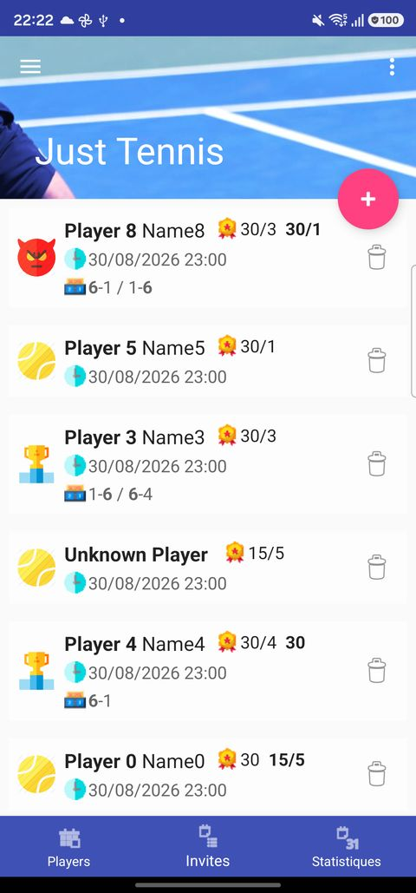
ItemDetailActivity - onglet Invitations moderne
Apres seed de donnees de demonstration via DBFeedTool.doFeed() (profil + 9 partenaires + invitations). Drawer ferme programmatiquement (ouvert par defaut au 1er affichage sinon).
UX §4 - "3 grands poles : Joueurs / Invitations / Classement & Statistiques"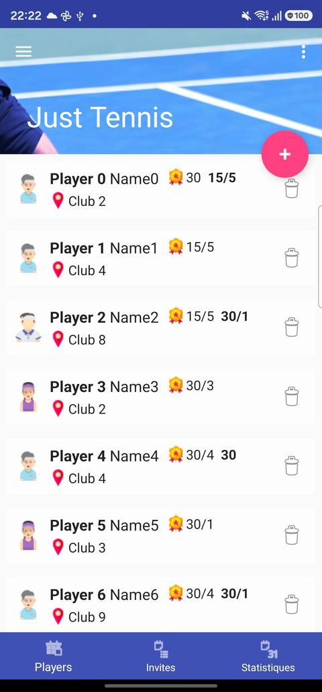
ItemDetailActivity - onglet Joueurs moderne
Liste des 9 partenaires generes (nom, classement, club). Fonctionne correctement (a l'inverse de ListPlayerActivity legacy, qui plante).
UX §4 + Epic B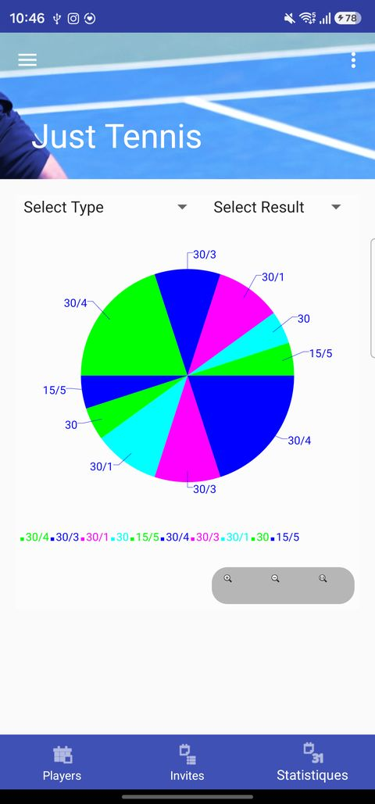
Onglet Statistiques (variete)
5 classements differents (30/4, 30/3, 30/1, 30, 15/5). Obtenue en corrigeant une lacune du seed (idRanking jamais renseigne sur les invites avec adversaire connu - backfill fait manuellement, comme le ferait InviteActivity normalement).
Anomalie visuelle : chaque tranche semble dessinee 2x en miroir a 180deg (invisible avec 1 seule categorie a 100%) - reproduite a l'identique sur PieChartActivity (legacy) via exactement la meme boucle que le vrai listener onItemSelected en production, donc probablement un vrai bug achartengine (lib de 2013, deja a remplacer) plutot qu'un artefact de capture - a confirmer par un test manuel avant de le traiter comme definitivement avere.
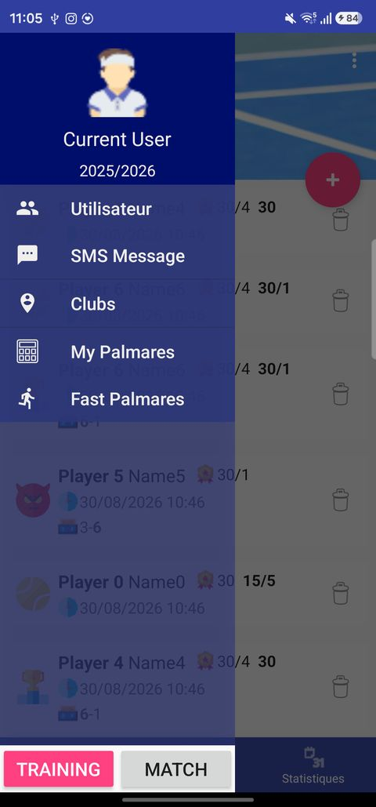
Drawer moderne ouvert
Capturees en conditions reelles sur le device (pas via test instrumente). Mode Training : drawer ouvert, selecteur de saison ("2025/2026") en en-tete, menu (Utilisateur/SMS Message/Clubs/My Palmares/Fast Palmares), boutons TRAINING/MATCH en pied de page - superpose a l'onglet Invitations.
Mode Competition : apres bascule manuelle sur "MATCH", theme rose/magenta (palette differente de la version legacy orange), nouvelle photo d'en-tete. Etat vide non traduit visible ("... this time.", probablement une chaine anglaise du type "No invitation to show at this time" cote liste Invitations - a verifier).
Epic I + UX §4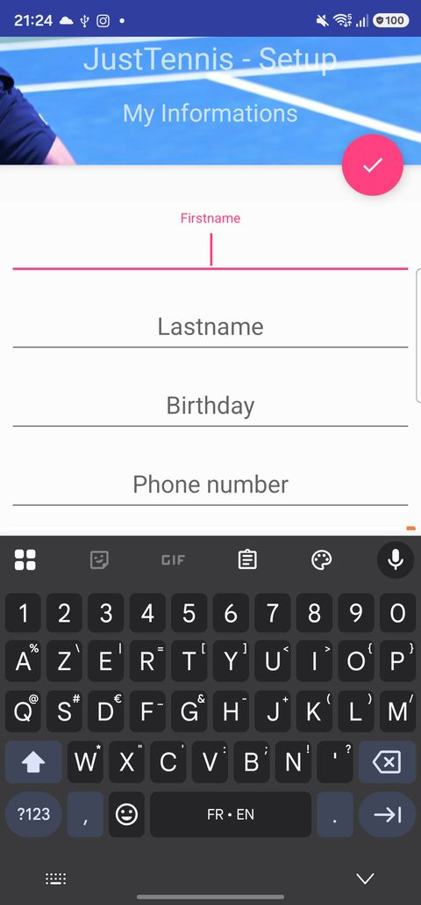
ItemDetailActivity moderne / LAUNCHER
Ecran d'accueil reel de l'app. Ici : onboarding "JustTennis - Setup / My Informations" (creation du User au 1er lancement) car base vide.
Epic A - "je cree mon profil ... lors du premier lancement de l'app (onboarding obligatoire)"
MainActivity legacy
Accueil legacy (menu complet). Ici : redirige vers la meme fiche de creation (voir note en haut) au lieu du menu, base vide.
Mode Competition : meme ecran avec TypeManager.TYPE=COMPETITION (theme orange au lieu du bleu par defaut Entrainement) - bascule accessible depuis le drawer, cf. §4 du cahier des charges ("identite visuelle contextuelle").
Epic A (redirection onboarding) + point d'entree vers la plupart des autres Epics (menu) + UX §4
UserActivity legacy
Fiche de l'utilisateur courant (= PlayerActivity + UserFragment). Identique visuellement a MainActivity/PlayerActivity ici (base vide).
Epic A - "je renseigne mon classement actuel", "je peux modifier mon profil a tout moment"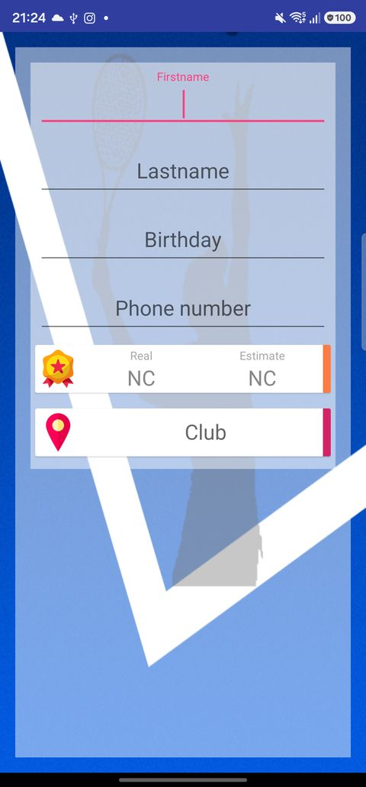
PlayerActivity legacy
Mode CREATE (par defaut). Meme layout que UserActivity (formulaire partage).
Epic B - "je cree une fiche joueur pour chaque partenaire potentiel : identite, telephone, classement, club/localisation"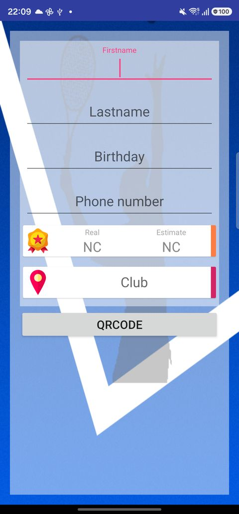
PlayerActivity (modifier) legacy
Mode MODIFY : bouton "QRCODE" affiche a la place de "Create"/"Import". 3e mode DEMANDE_ADD (confirmation Oui/Non) non capturable : code mort, uniquement declenche par SmsReceiver (recepteur SMS desactive en production).
Epic B - "je peux modifier mon profil a tout moment"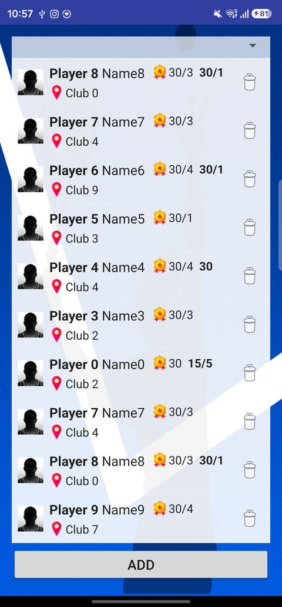
ListPlayerActivity legacy - BUG CORRIGE avec des donnees
Bug 1 corrige : plantait systematiquement (IllegalArgumentException: No view
found for id ... main_container) - le fragment liste (jamais utilise) etait attache
au container de AbsctractFragmentActivity puis ce layout etait immediatement
remplace par drawerManager.setContentView(R.layout.list_player). Fix :
createFragment() retourne null, AbsctractFragmentActivity
ignore desormais un fragment nul.
Bug 2 corrige : meme apres le fix ci-dessus, la liste restait vide malgre 9 joueurs
en base - onCreate() ne cablait en realite jamais le ListView a un
adapter (ni business.initialize()/refreshData() jamais appeles). Un
adapter pret a l'emploi (ListPlayerAdapter) existait deja mais n'etait utilise
que par ListPlayerFragment2 (code mort). Fix : cablage complet. Les 9 joueurs du
seed s'affichent desormais correctement.
Mode Competition : joueurs "PlayerC 0-9" (voir la note sur les 2 bugs de seed en
haut de page - DBFeedTool ne seedait jamais reellement le type Competition).
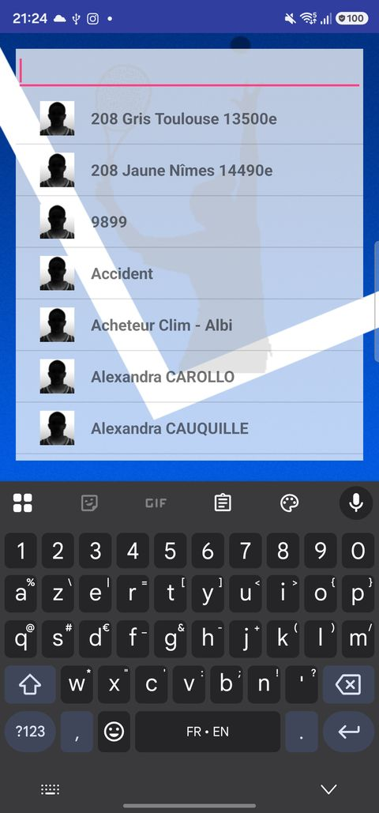
ListPersonActivity legacy
Liste des contacts Android (import pour creer un Player). Ici : liste vide/permission READ_CONTACTS accordee mais pas de contact affiche capture.
Epic B - "je peux importer une fiche directement depuis mes contacts telephone"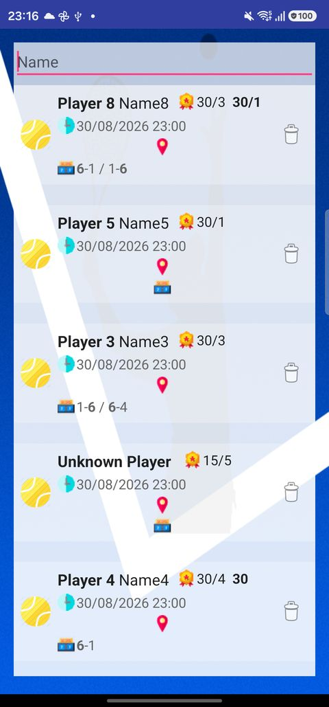
ListInviteActivity legacy
Liste des invites (matchs/entrainements), triee par date desc. Peuplee (donnees de seed).
Bug corrige au passage : ListInviteAdapter.getView() utilisait
inflater.inflate(layout, parent) (2 arguments = attachToRoot true) au lieu de
inflate(layout, parent, false), provoquant un crash
AdapterView.addView() not supported des qu'au moins un item existait (invisible
avant, liste vide au 1er passage).
Mode Competition : invites reconstituees contre les joueurs "PlayerC 0-9" (theme
orange). A egalement fallu explicitement rattacher ces invites a la saison active
(invite.setSaison(...)) - DBInviteDataSource.customizeWhereSaison()
filtre en correspondance exacte (pas de fallback OR ID_SAISON IS NULL
contrairement au filtre Player), une invite sans saison est donc invisible ici.
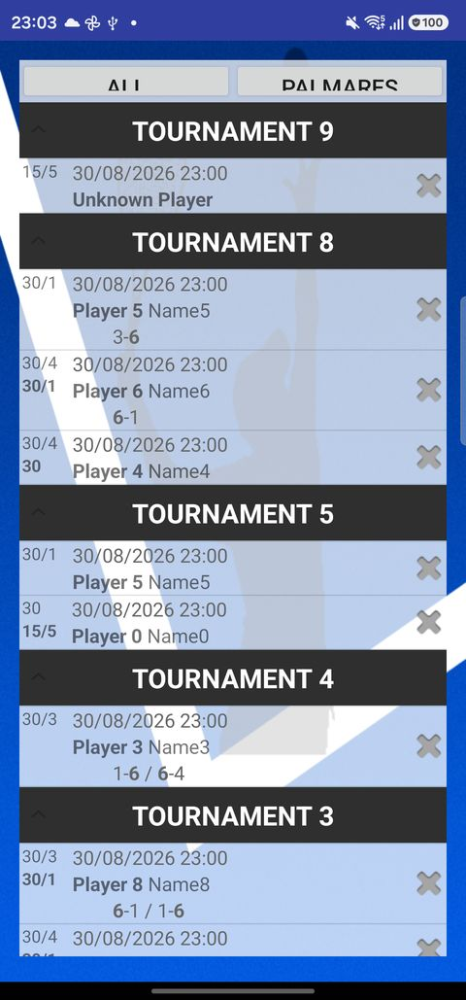
ListCompetitionActivity legacy
Competitions groupees par Tournoi (ExpandableListView), lien vers Calcul Classement. Peuplee (donnees de seed, plusieurs tournois avec matchs).
Epic C - "les competitions peuvent en plus etre regroupees et consultees par tournoi dans une vue dediee"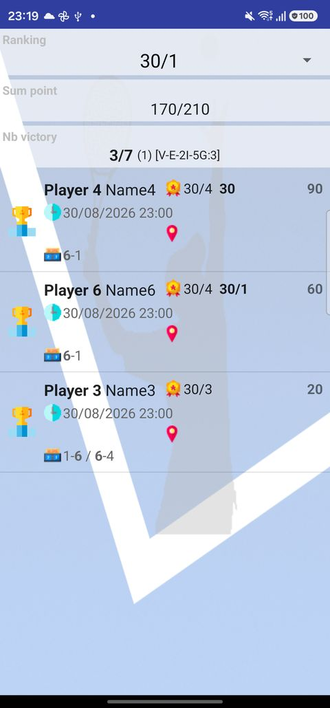
ComputeRankingActivity legacy - BUG CORRIGE
Bug corrige : plantait systematiquement (ClassCastException: RecyclerView
cannot be cast to ListView) - le layout partage compute_ranking_list_invite.xml
avait ete migre vers RecyclerView pour l'ecran moderne ComputeRankingFragment
(atteignable via le drawer moderne, "My Palmares"), cassant l'ecran legacy qui attend un
ListView/ArrayAdapter. Fix : layout dedie
compute_ranking_list_invite_legacy.xml pour l'ecran legacy uniquement. Capture
apres fix : 170/210 points, 3/7 victoires, detail par match.
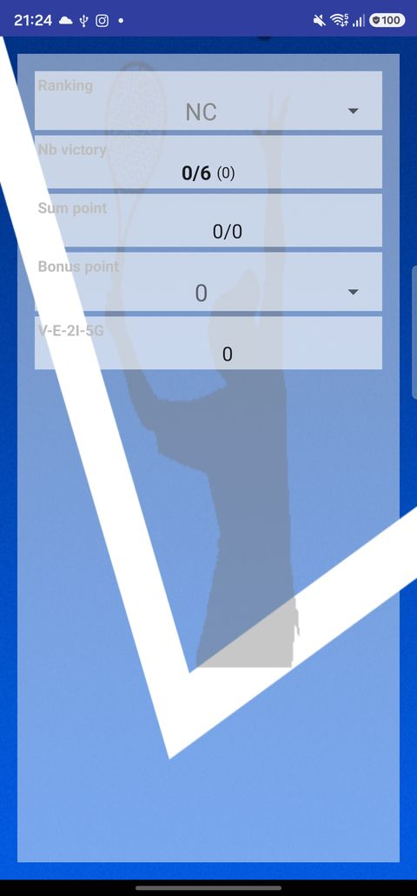
PalmaresFastActivity legacy
Simulateur "palmarès rapide" : saisie manuelle de victoires/defaites par classement, independant des vraies donnees. Ecran vierge (aucune saisie).
Epic G - "un mode 'palmares rapide' me permet de saisir directement un nombre hypothetique de victoires/defaites par niveau"PalmaresFastActivity (simulation) legacy
Resultat calcule apres saisie de victoires/defaites factices sur les 4 premiers classements (via reflexion sur le champ prive "business", equivalent d'une saisie utilisateur) : 720/210 points, 6/6 victoires, V-E-2I-5G:18.
Epic G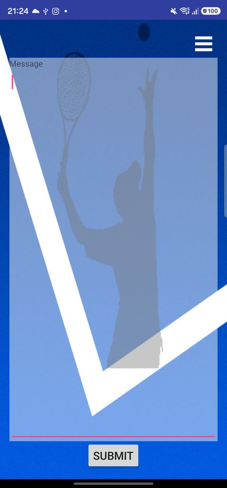
MessageActivity legacy
Edition du modele de message SMS commun (tags [FIRSTNAME], [DATE], etc.).
Epic H - "un modele de message personnalisable ... sert de base a l'envoi d'invitations et de demandes d'ajout"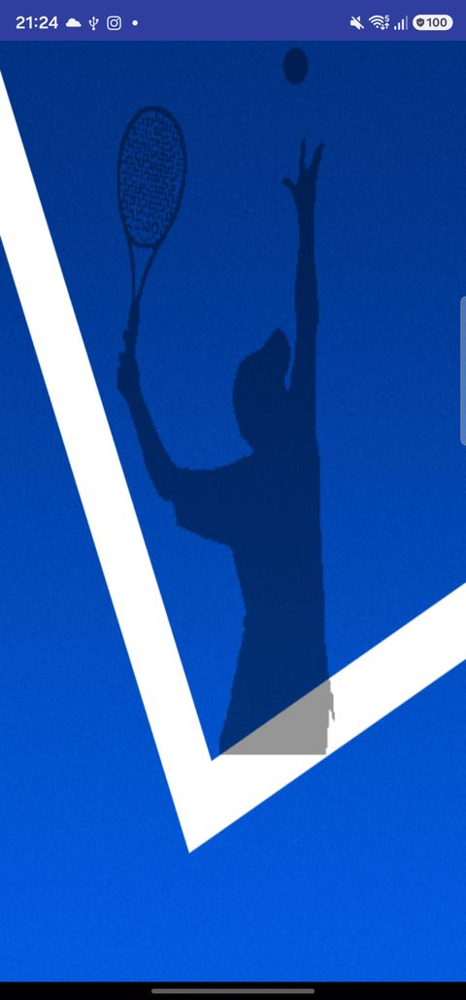
QRCodeActivity legacy
QR code de la fiche joueur courante, pour echange P2P entre 2 telephones.
Epic B - "je peux echanger une fiche joueur avec un autre telephone via QR code"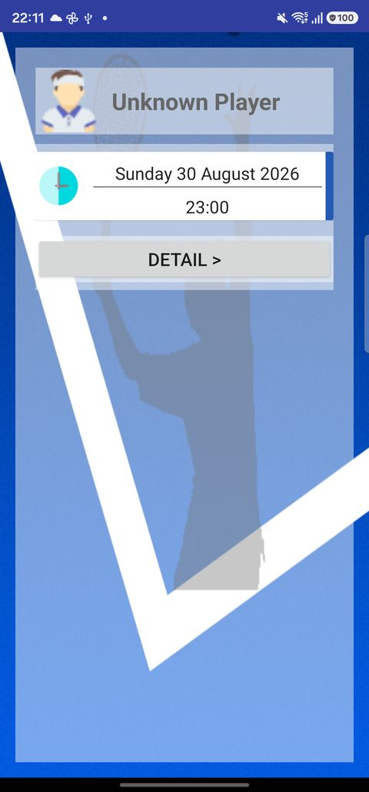
InviteActivity (creation) legacy
Creation d'une nouvelle invite, adversaire "Unknown Player" (aucun partenaire choisi),
date/heure par defaut, bouton "DETAIL". Necessitait de fournir un Bundle d'extras non vide
(sinon NPE sur intent.getExtras()) + l'ID sentinelle "Unknown Player" (-1,
sinon NPE sur player.getIdRanking() dans initializeRankingList()).
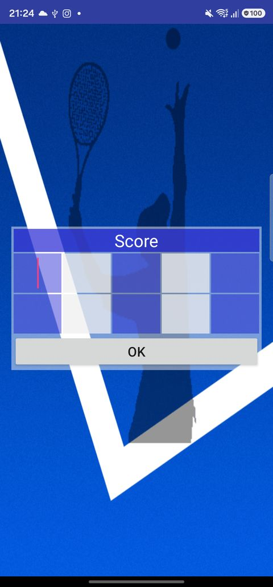
ScoreActivity legacy
Saisie pure du score (5 sets), retourne le resultat a InviteActivity.
Epic D - "je saisis le score set par set (jusqu'a 5 sets), avec possibilite d'indiquer un forfait"LocationTournamentActivity legacy
Etat selecteur (spinner + bouton "+"), avant saisie.
Epic E - "je gere un referentiel d'adresses, de clubs ... et de tournois"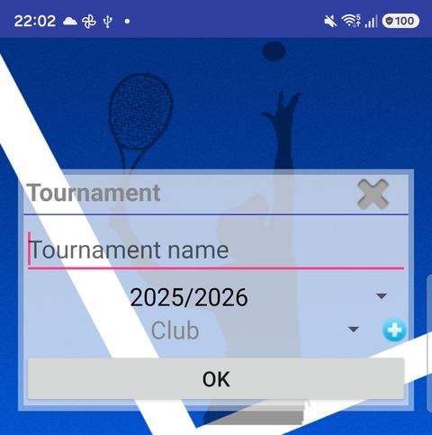
LocationTournamentActivity (saisie) legacy
Formulaire de creation d'un Tournoi (nom, saison, club en cascade). Capture obtenue en lancant l'ecran en mode ADD (equivalent du clic sur "+").
Epic ELocationClubActivity legacy
Etat selecteur, avant saisie.
Epic E - "je peux creer un club a la volee depuis le formulaire de tournoi" (pattern cascade)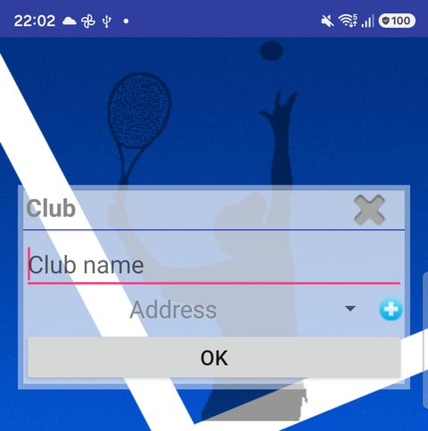
LocationClubActivity (saisie) legacy
Formulaire de creation d'un Club (nom, adresse en cascade).
Epic E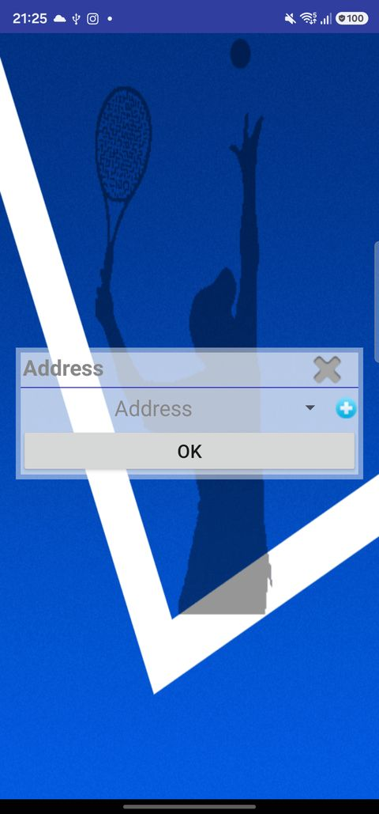
LocationAddressActivity legacy
Etat selecteur, avant saisie.
Epic E - "une adresse a la volee depuis le formulaire de club"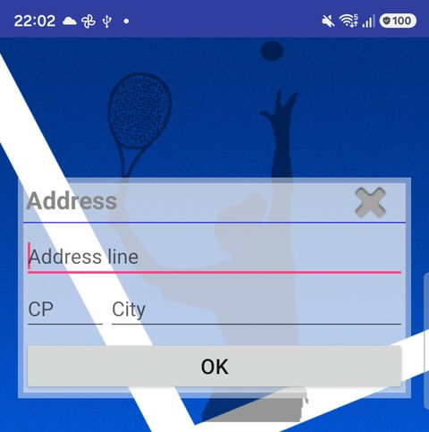
LocationAddressActivity (saisie) legacy
Formulaire de creation d'une Adresse (ligne, code postal, ville). Capture recadree pour exclure le clavier (une suggestion Gboard affichait une adresse personnelle reelle sur la capture d'origine).
Epic E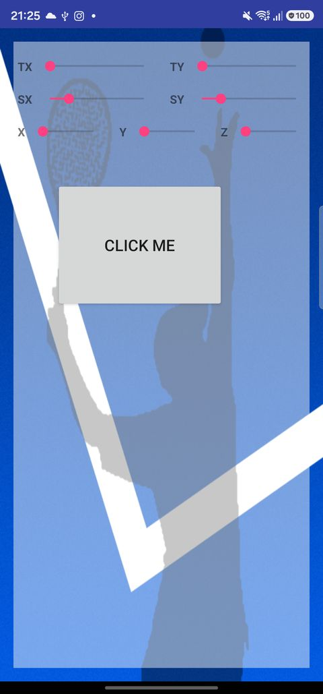
RotatingButtons legacy
Demo technique (SeekBars pilotant rotation/scale d'un bouton), sans lien avec le metier de l'app - code mort fonctionnellement.
Aucun epic - hors perimetre, a ne pas reprendre dans la reecriture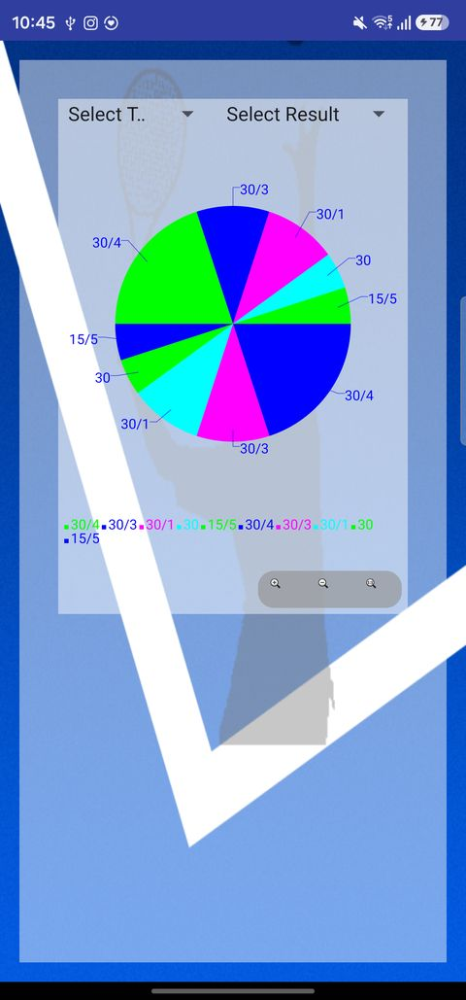
PieChartActivity (avec donnees) legacy - BUG CORRIGE
Bug corrige : restait vide meme avec des donnees reelles injectees (contrairement
au meme graphique sur l'onglet Statistiques moderne). Root cause : le conteneur du graphique
(LinearLayout avec layout_height="0dip" + layout_weight="1",
dans pie_chart.xml) est heberge dans un NestedScrollView
(abstract_fragment.xml) qui mesure ses enfants avec une hauteur "illimitee" -
un layout_weight n'a alors aucun effet, le conteneur se retrouvait a 0px de
haut. Fix : hauteur fixe (400dp) au lieu du poids. Legende et controles de zoom desormais
visibles en prime. Aucun effet de bord constate sur l'onglet moderne (meme layout partage).
Anomalie distincte (non corrigee) : chaque tranche semble dessinee 2x en miroir a
180deg - reproduite ici via la MEME boucle addValue() que le vrai listener
onItemSelected en production, donc probablement un vrai bug achartengine
plutot qu'un artefact de capture (a confirmer par un test manuel).
MatchActivity legacy
Ecran quasi vestige : template Android Studio "Navigation Drawer Activity" jamais termine (le code peuplant son conteneur de contenu est en commentaire dans le source). N'affiche litteralement rien - pas de capture (screenshot vide retire, n'apportait aucune information).
Aucun epic clair - vestige, fonctionnalite deja couverte par ListInviteActivity/InviteActivity